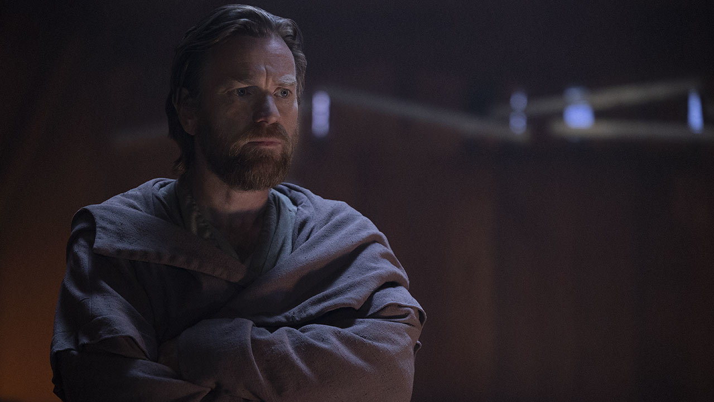
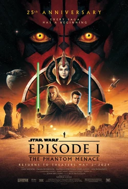
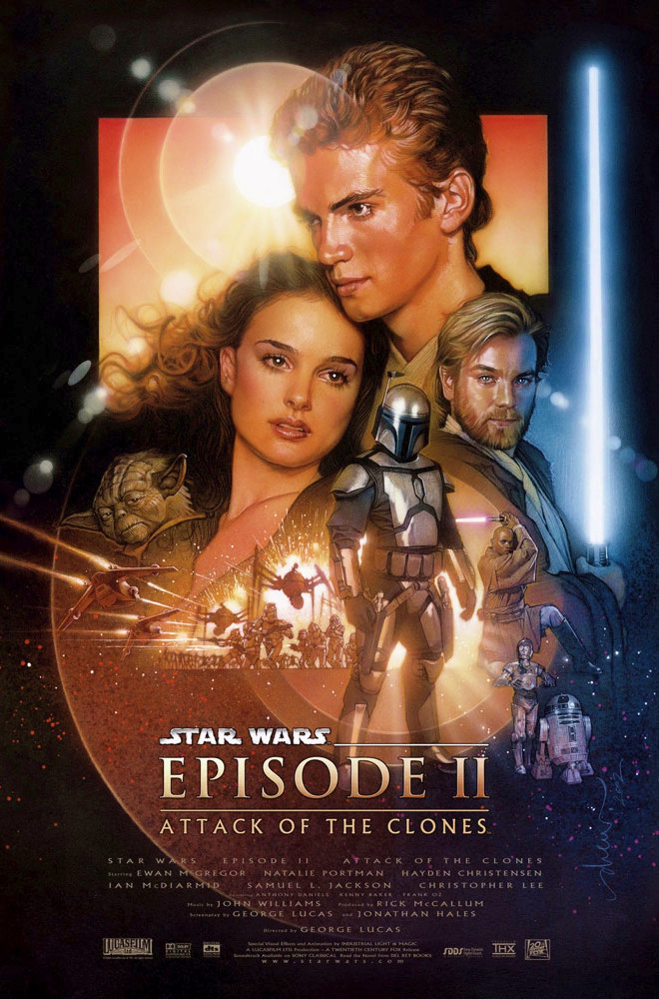
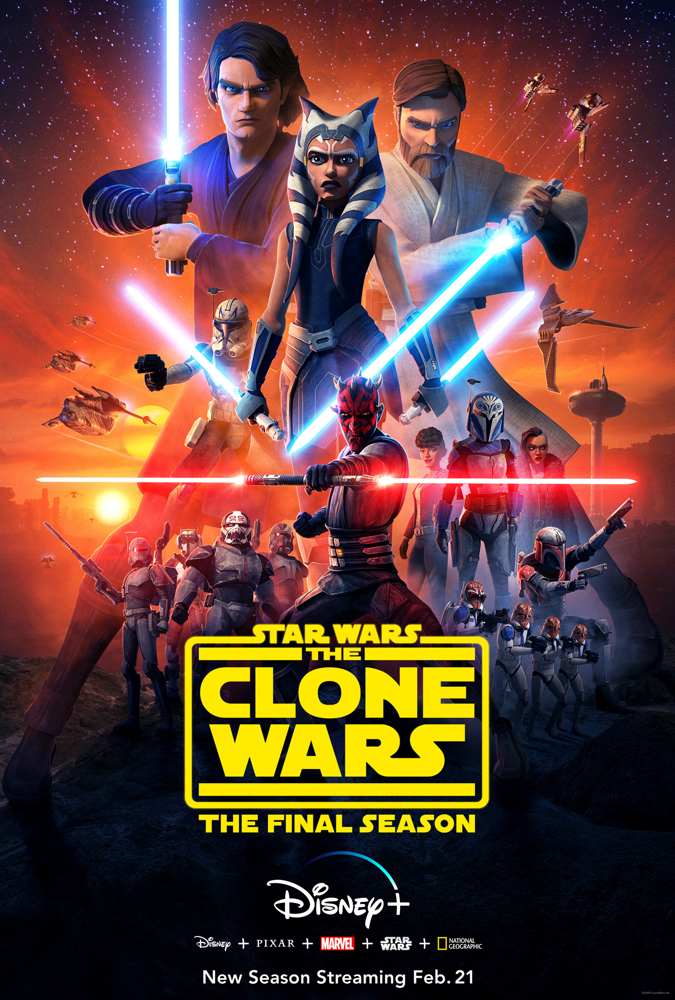
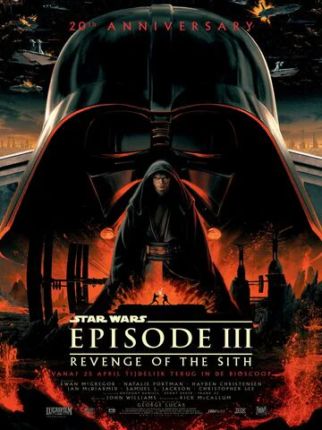
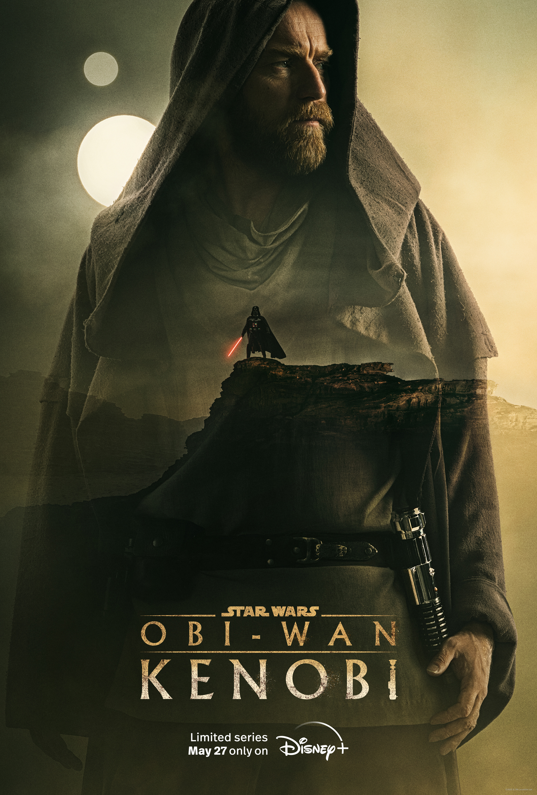
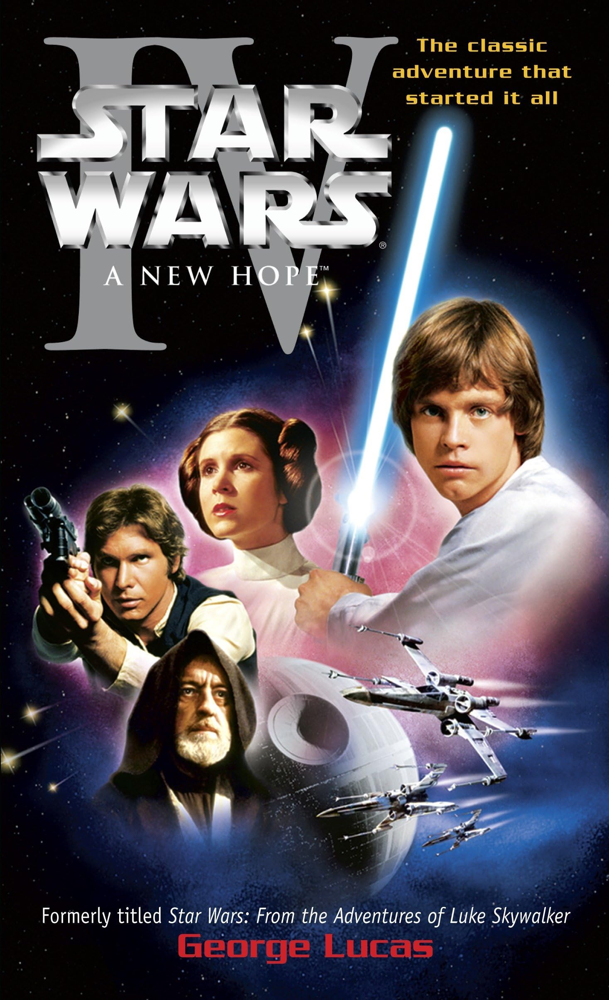
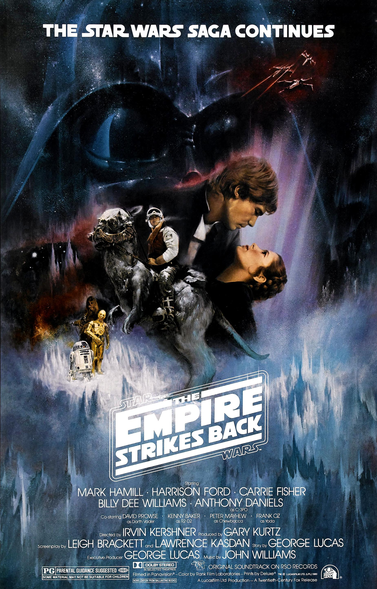
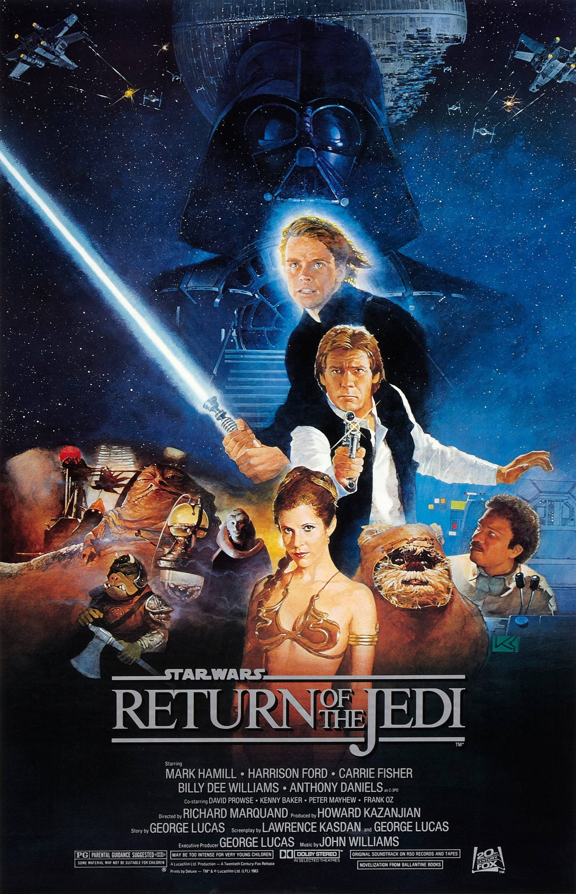

Verdedigingsmeester
Hij is de ultieme beoefenaar van de defensieve Soresu-lichtzwaardstijl, waarmee hij vijanden uitput tot ze een fout maken.

Obi-Wan Kenobi, later ook bekend als Ben Kenobi, is een legendarische Jedi Meester van de Galactische Republiek. Als nobele krijger en begaafd gebruiker van de Force diende hij als Hoge Generaal tijdens de Clone Wars en gold hij als een van de meest gerespecteerde stemmen binnen de Hoge Jedi Raad. Hij wijdde zijn leven aan het beschermen van vrede, gerechtigheid en de hoop van het sterrenstelsel.
Hij is de ultieme beoefenaar van de defensieve Soresu-lichtzwaardstijl, waarmee hij vijanden uitput tot ze een fout maken.
Hij staat bekend als "The Negotiator" omdat hij conflicten tactisch en met woorden oplost voordat hij zijn wapen trekt.
Hij bezit een ijzeren discipline en blijft altijd rationeel en trouw aan de Light Side, zelfs na de vernietiging van de Jedi Order en het verraad van Anakin.
Hij wint gevechten door geduld, observatie en het strategisch gebruik van zijn omgeving (zoals de beroemde high ground), in plaats van pure agressie.








